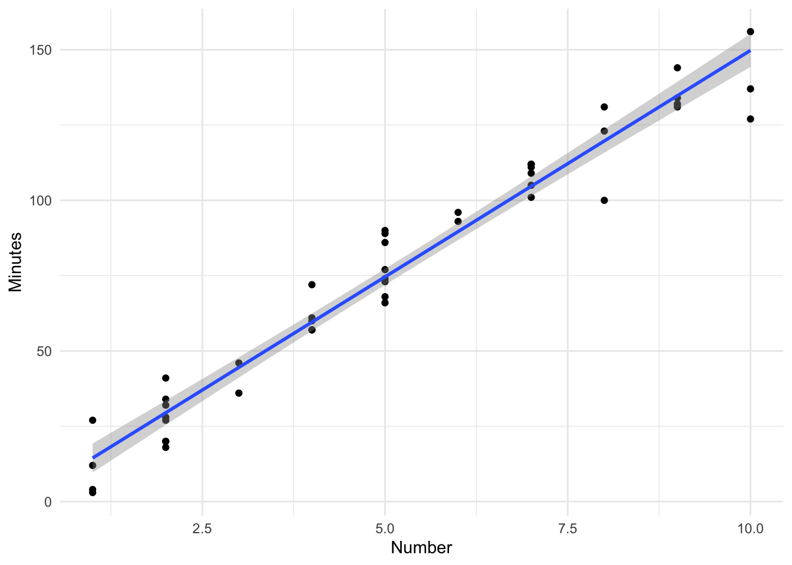

Last updated: 2020-04-09
Checks: 7 0
Knit directory: STA463_Spring_2020/
This reproducible R Markdown analysis was created with workflowr (version 1.4.0). The Checks tab describes the reproducibility checks that were applied when the results were created. The Past versions tab lists the development history.
Great! Since the R Markdown file has been committed to the Git repository, you know the exact version of the code that produced these results.
Great job! The global environment was empty. Objects defined in the global environment can affect the analysis in your R Markdown file in unknown ways. For reproduciblity it’s best to always run the code in an empty environment.
The command set.seed(20200213) was run prior to running the code in the R Markdown file. Setting a seed ensures that any results that rely on randomness, e.g. subsampling or permutations, are reproducible.
Great job! Recording the operating system, R version, and package versions is critical for reproducibility.
Nice! There were no cached chunks for this analysis, so you can be confident that you successfully produced the results during this run.
Great job! Using relative paths to the files within your workflowr project makes it easier to run your code on other machines.
Great! You are using Git for version control. Tracking code development and connecting the code version to the results is critical for reproducibility. The version displayed above was the version of the Git repository at the time these results were generated.
Note that you need to be careful to ensure that all relevant files for the analysis have been committed to Git prior to generating the results (you can use wflow_publish or wflow_git_commit). workflowr only checks the R Markdown file, but you know if there are other scripts or data files that it depends on. Below is the status of the Git repository when the results were generated:
Ignored files:
Ignored: .DS_Store
Ignored: .Rhistory
Ignored: .Rproj.user/
Ignored: lec/
Untracked files:
Untracked: docs/figure/intervals.Rmd/
Unstaged changes:
Modified: analysis/corona.Rmd
Note that any generated files, e.g. HTML, png, CSS, etc., are not included in this status report because it is ok for generated content to have uncommitted changes.
These are the previous versions of the R Markdown and HTML files. If you’ve configured a remote Git repository (see ?wflow_git_remote), click on the hyperlinks in the table below to view them.
| File | Version | Author | Date | Message |
|---|---|---|---|---|
| Rmd | c846000 | dleelab | 2020-04-10 | added |
data0120=read.table("http://www.stat.ufl.edu/~rrandles/sta4210/Rclassnotes/data/textdatasets/KutnerData/Chapter%20%201%20Data%20Sets/CH01PR20.txt")
colnames(data0120)=c("minutes","number")
fit=lm(minutes~number,data=data0120)
confint(fit,,0.95) 2.5 % 97.5 %
(Intercept) -6.234843 5.074529
number 14.061010 16.009486confint(fit,1,.95) 2.5 % 97.5 %
(Intercept) -6.234843 5.074529confint(fit,2,.95) 2.5 % 97.5 %
number 14.06101 16.00949confint(fit,"(Intercept)",.95) 2.5 % 97.5 %
(Intercept) -6.234843 5.074529confint(fit,"number",.95) 2.5 % 97.5 %
number 14.06101 16.00949Get a 95% confidence interval for the mean minutes took if the number of copiers serviced=15 and 12.
new=data.frame(number=c(15,12))
new number
1 15
2 12predict(fit,new,interval="confidence",level = 0.95) fit lwr upr
1 224.9486 214.9487 234.9484
2 179.8428 172.6162 187.0694Get a 95% prediction interval for the service time in minutes of a service call with 15 or 12 copiers serviced.
predict(fit,new,interval="prediction",level=0.95) fit lwr upr
1 224.9486 204.3785 245.5186
2 179.8428 160.4688 199.2169ofit=lm(circumference~age,data=Orange)
predict(ofit,data.frame(age=600),interval="confidence",level=0.95)#by default is 95% fit lwr upr
1 81.46185 71.66058 91.26311ofit2<-lm(Orange$circumference~Orange$age)
predict(ofit2,data.frame(age=600),interval="confidence",level=0.95)Warning: 'newdata' had 1 row but variables found have 35 rows fit lwr upr
1 29.99855 14.18732 45.80978
2 69.07649 58.07322 80.07976
3 88.29515 79.04667 97.54362
4 124.59706 116.31822 132.87590
5 148.83392 139.15468 158.51317
6 163.88854 152.75204 175.02503
7 186.31030 172.52264 200.09797
8 29.99855 14.18732 45.80978
9 69.07649 58.07322 80.07976
10 88.29515 79.04667 97.54362
11 124.59706 116.31822 132.87590
12 148.83392 139.15468 158.51317
13 163.88854 152.75204 175.02503
14 186.31030 172.52264 200.09797
15 29.99855 14.18732 45.80978
16 69.07649 58.07322 80.07976
17 88.29515 79.04667 97.54362
18 124.59706 116.31822 132.87590
19 148.83392 139.15468 158.51317
20 163.88854 152.75204 175.02503
21 186.31030 172.52264 200.09797
22 29.99855 14.18732 45.80978
23 69.07649 58.07322 80.07976
24 88.29515 79.04667 97.54362
25 124.59706 116.31822 132.87590
26 148.83392 139.15468 158.51317
27 163.88854 152.75204 175.02503
28 186.31030 172.52264 200.09797
29 29.99855 14.18732 45.80978
30 69.07649 58.07322 80.07976
31 88.29515 79.04667 97.54362
32 124.59706 116.31822 132.87590
33 148.83392 139.15468 158.51317
34 163.88854 152.75204 175.02503
35 186.31030 172.52264 200.09797The second code gives very strange output. We want one confidence interval, but it gives us many. This is an issue about using different names when referring to different predictor variables. Look at the following ofit3 to understand how to make a correct fit better.
a=Orange$circumference
x=Orange$age
#here you use x as a name
ofit3=lm(a ~ x)
#here you use x again as a name in newdata.
predict(ofit3, data.frame(x=600), interval = "confidence",level=0.95) fit lwr upr
1 81.46185 71.66058 91.26311predict(ofit,data.frame(age=mean(Orange$age)), interval="confidence",level=0.95) fit lwr upr
1 115.8571 107.6939 124.0204conf.band <- predict(fit, interval="confidence")
pred.band <- predict(fit, interval="prediction")Warning in predict.lm(fit, interval = "prediction"): predictions on current data refer to _future_ responsesclass(conf.band)[1] "matrix"plot(minutes~number,data=data0120)
abline(fit)
lines(data0120$number, conf.band[,2])
lines(data0120$number, conf.band[,3])R used line to connect points, but they overlap with each other. How to fix? We need to sort the data first, then connect them.
plot(minutes~number,data=data0120)
abline(fit)
lines(sort(data0120$number), sort(conf.band[,2]),col="red",lty=3)
lines(sort(data0120$number), sort(conf.band[,3]),col="red",lty=3)Add the prediction band to it. Use a different color.
plot(minutes~number,data=data0120)
abline(fit)
lines(sort(data0120$number), sort(conf.band[,2]),col="red",lty=2)
lines(sort(data0120$number), sort(conf.band[,3]),col="red",lty=2)
lines(sort(data0120$number), sort(pred.band[,2]),col="blue",lty=3)
lines(sort(data0120$number), sort(pred.band[,3]),col="blue",lty=3)We can do the same thing in ggplot. First a plot of the data with the linear model (lm) with confidence band.
library(ggplot2)
ggplot(data0120) +
geom_point(aes(x=number, y=minutes)) +
geom_smooth(method=lm, se=TRUE, aes(x=number, y=minutes)) +
labs(x="Number", y = "Minutes") +
theme_minimal()
To add the prediction bands we need to add something to the data. Column bind the output from the predict function to the dataset we are send into the ggplot function. Then we’ll simply draw some extra lines
ggplot(cbind(data0120, pred.band) ) +
geom_point(aes(x=number, y=minutes)) +
geom_smooth(method=lm, se=TRUE, aes(x=number, y=minutes))+
geom_line(aes(x=number, y=lwr), col="red", linetype="dashed") +
geom_line(aes(x=number, y=upr), col="red", linetype="dashed") +
labs(x="Number", y = "Minutes") +
theme_minimal()We will predict the response value for some new predict variable values. We will also calculate the prediction interval to demonstrate the behavior far from our dataset. We will also demonstrate a limitation of base R graphics in the process.
First prepare the new data and calculate the predicted value using this new data.
new.number<- data.frame(number=c(0, 1.0, 4, 7,12))
new.pred <- predict(fit, newdata=new.number, interval="prediction")
new.number.pred <- cbind(new.number, new.pred)
new.number.pred number fit lwr upr
1 0 -0.5801567 -19.424385 18.26407
2 1 14.4550914 -4.155437 33.06562
3 4 59.5608355 41.354191 77.76748
4 7 104.6665796 86.399216 122.93394
5 12 179.8428198 160.468784 199.21686plot(minutes~number,data=data0120)
abline(fit)
points(new.number.pred$number, new.number.pred$fit, col="red", pch=8)
lines(sort(data0120$number), sort(pred.band[,2]),col="red",lty=2)
lines(sort(data0120$number), sort(pred.band[,3]),col="red",lty=2)The above does not show all the information. Need to edit the plot function.
plot(minutes~number,data=data0120,xlim=c(-2,12.5),ylim=c(-5,260))
abline(fit)
points(new.number.pred$number, new.number.pred$fit, col="red", pch=8)
lines(sort(data0120$number), sort(pred.band[,2]),col="red",lty=2)
lines(sort(data0120$number), sort(pred.band[,3]),col="red",lty=2)ggplot(data0120) +
geom_point(aes(x=number, y=minutes)) +
geom_smooth(method=lm, se=TRUE, aes(x=number, y=minutes)) +
geom_point(data=new.number.pred, aes(x=number, y=fit), col="red", shape=8, size=2) +
geom_line(data=new.number.pred, aes(x=number, y=lwr), col="red", linetype="dashed") +
geom_line(data=new.number.pred, aes(x=number, y=upr), col="red", linetype="dashed") +
labs(x="Number", y = "Minutes") +
theme_minimal()Use the ggplot, it will automatically cover the new data point.
Residual standard error is an estimate of the standard deviation of \(\epsilon\), \(\sqrt{MSE}\). It tells the amount of the variation that a fitted regression line fails to account for. However, it depends on the scale of the \(Y\)s. See the following example.
summary(fit)
Call:
lm(formula = minutes ~ number, data = data0120)
Residuals:
Min 1Q Median 3Q Max
-22.7723 -3.7371 0.3334 6.3334 15.4039
Coefficients:
Estimate Std. Error t value Pr(>|t|)
(Intercept) -0.5802 2.8039 -0.207 0.837
number 15.0352 0.4831 31.123 <2e-16 ***
---
Signif. codes: 0 '***' 0.001 '**' 0.01 '*' 0.05 '.' 0.1 ' ' 1
Residual standard error: 8.914 on 43 degrees of freedom
Multiple R-squared: 0.9575, Adjusted R-squared: 0.9565
F-statistic: 968.7 on 1 and 43 DF, p-value: < 2.2e-16plot(minutes~number,data=data0120)
abline(fit)data0119=read.table("http://www.stat.ufl.edu/~rrandles/sta4210/Rclassnotes/data/textdatasets/KutnerData/Chapter%20%201%20Data%20Sets/CH01PR19.txt")
colnames(data0119)=c("Y","X")
fit2=lm(Y~X,data=data0119)
summary(fit2)
Call:
lm(formula = Y ~ X, data = data0119)
Residuals:
Min 1Q Median 3Q Max
-2.74004 -0.33827 0.04062 0.44064 1.22737
Coefficients:
Estimate Std. Error t value Pr(>|t|)
(Intercept) 2.11405 0.32089 6.588 1.3e-09 ***
X 0.03883 0.01277 3.040 0.00292 **
---
Signif. codes: 0 '***' 0.001 '**' 0.01 '*' 0.05 '.' 0.1 ' ' 1
Residual standard error: 0.6231 on 118 degrees of freedom
Multiple R-squared: 0.07262, Adjusted R-squared: 0.06476
F-statistic: 9.24 on 1 and 118 DF, p-value: 0.002917plot(Y~X,data=data0119)
abline(fit2)Look at the two graphs and residual standard errors. Which example seems to have a more clear linear association? Which example has a smaller residual standard error?
Example 1: Residual standard error: 8.914 on 43 degrees of freedom.
Example 2: Residual standard error: 0.6231 on 118 degrees of freedom.
Explanation: The scales of the response variable are different.
sessionInfo()R version 3.6.1 (2019-07-05)
Platform: x86_64-apple-darwin15.6.0 (64-bit)
Running under: macOS Mojave 10.14.6
Matrix products: default
BLAS: /Library/Frameworks/R.framework/Versions/3.6/Resources/lib/libRblas.0.dylib
LAPACK: /Library/Frameworks/R.framework/Versions/3.6/Resources/lib/libRlapack.dylib
locale:
[1] en_US.UTF-8/en_US.UTF-8/en_US.UTF-8/C/en_US.UTF-8/en_US.UTF-8
attached base packages:
[1] stats graphics grDevices utils datasets methods base
other attached packages:
[1] ggplot2_3.2.1
loaded via a namespace (and not attached):
[1] Rcpp_1.0.2 knitr_1.24 whisker_0.3-2 magrittr_1.5
[5] workflowr_1.4.0 tidyselect_0.2.5 munsell_0.5.0 colorspace_1.4-1
[9] R6_2.4.0 rlang_0.4.5 dplyr_0.8.3 stringr_1.4.0
[13] tools_3.6.1 grid_3.6.1 gtable_0.3.0 xfun_0.9
[17] withr_2.1.2 git2r_0.26.1 htmltools_0.3.6 assertthat_0.2.1
[21] yaml_2.2.0 lazyeval_0.2.2 rprojroot_1.3-2 digest_0.6.20
[25] tibble_2.1.3 crayon_1.3.4 purrr_0.3.3 fs_1.3.1
[29] glue_1.3.1 evaluate_0.14 rmarkdown_1.15 labeling_0.3
[33] stringi_1.4.3 pillar_1.4.2 compiler_3.6.1 scales_1.0.0
[37] backports_1.1.4 pkgconfig_2.0.2